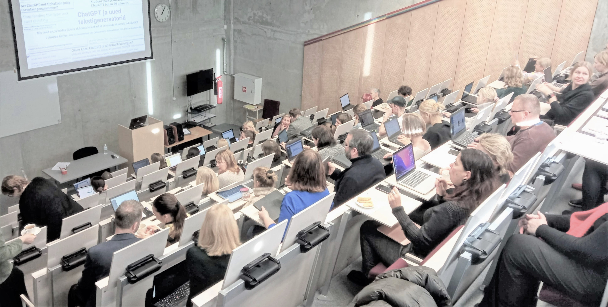
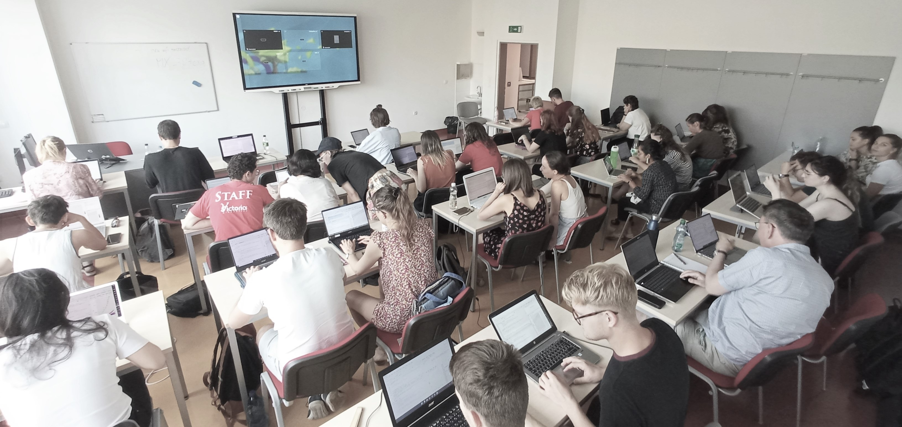
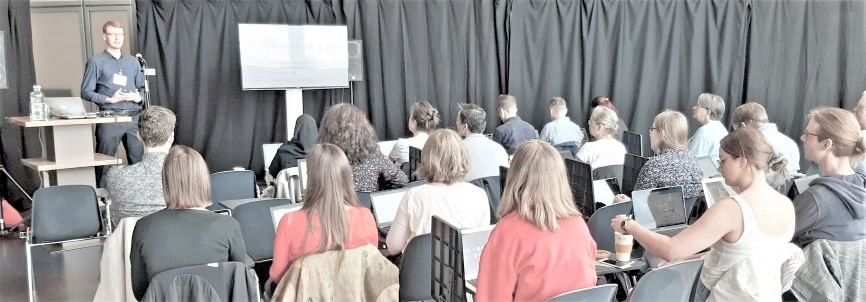
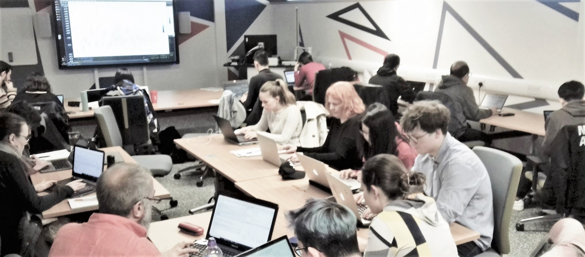

Koolitused ja konsulteerimine
Datafigure OÜ korraldab tehisintellekti (AI), andmeteaduse, programmeerimise ja muude digipädevuste alaseid koolitusi, töötubasid ja ettekandeid. Võimalik on tellida ka üks-ühele juhendamist, ekspertarvamust, konsulteerimist ja projektipõhiseid töid.
Koolituste puhul on formaat ja tase paindlikud - oleme korraldanud üritusi pikkusega poolest tunnist mitme päevani ja nii algajatele kui oma ala professionaalidele. Seda nii erinevate ürituste (nt konverentside) raames, online-koolituste sarjades kui kohapeal sisekoolitustena. Meie klientideks on nii era- kui avalik sektor, koolid ja kõrgkoolid, riigiasutused kui kolmas sektor, ja nii Eestis kui mujal Euroopas.
Allpool on kirjeldatud siiani toimunud koolituste peamised tüübid. Iga koolitus on kohandatud kliendi soovide ja vajaduste järgi, ja materjale uuendatakse pidevalt, sest kõnealused tehnoloogiad nagu AI arenevad väga kiiresti. Hinnastame pikkuse, teema keerukuse ja asukoha järgi. Koolitame nii eesti kui inglise keeles.
Tehisintellekt ja haridus
Keskendume generatiivse tehisintellekti põhiste tööriistade (nt ChatGPT, Gemini Copilot, Elicit, Canva jt) kasutamisele, arutleme kuidas need tehnoloogilised edusammud mõjutavad haridust, õppimist ja õpetamist nii praegu kui lähitulevikus. Mõtestame tehisintellekti kasutamist hariduses ja õpime tehis-abilistega koos töötama. See on vajalik oskus, eriti nüüd, kus Eestis on välja kuulutatud uus TI-hüpe, mis näeb ette ChatGPT taoliste assistentide laialdast kasutust nii õpilaste kui õpetajate poolt. Vastavalt publikule keskendub ettekanne ja praktilised näited kas üldharidusele või kõrgharidusele. Koolitus võib vastavalt soovile olla nt tunniajane sissejuhatus või pikem 3-4h üritus, kus osalejad kohe neid tööriistu praktiliste harjutuste kaudu õppima ja kogemusi jagama suunatakse.


Tehisintellekt ja organisatsioon
Fookus samuti praktilistel AI-tööriistadel, aga keskendudes sellele, kuidas oma sektoris neid asju kõige paremini tööülesannete kiiremaks lahendamiseks ära kasutada, kuidas harjutada tehis-assistentidega koos toimetama, aga ka kuidas mõtestada tööpostil õppimist ja praktikat olukorras, kus tehisassistent on tihti võimeline algaja töötaja tööülesanded ära tegema. Soovi korral puudutame ka laiema automatiseerimise temaatikat: kui näiteks ChatGPT või Copiloti abil saab kiirelt ühte-kahte dokumenti kokku võtta ja töödelda või ühekaupa meile kirjutada, siis neid tööriistu tööle panevate keelemudelite abil otse (tavaliselt väikse IT-arendusega) on võimalik lihtsalt automatiseerida erinevaid protsesse palju suuremal skaalal.

AI ja analüütika
Suurte keelemudelite abil on võimalik kiirelt ja effektiivselt teostada andmeanalüütikat, mis veel hiljuti oleks vajanud iga uue küsimuse või probleemi jaoks eraldi masinõppe mudeli treenimist. Nendel koolitustel oleme vaadanud erinevate keele- ja multimodaalsete mudelite võimekusi kvalitatiivsete andmete (tekstid, pildid) analüüsimisel, ning praktiliste näidete abil näidanud, kuidas sellega võimestada nii andmete analüüsi kui selle abil protsesside automatiseerimist. Väiksemas mahus andmeanalüüsi võimaldavad aga ka mitmed juturobotid nagu ChatGPT, kus saab koodi jooksutada, mis omakorda aitab kiirelt luua statistilisi mudeleid, graafikuid või töödelda andmeid.
Andmeteadus ja R
Need on enamasti olnud algtaseme praktilised töötoad, mis on sageli suunatud inimestele, kellel on oma valdkonnas (näiteks humanitaar- või sotsiaalteadustes) kõrgtasemel oskused, kuid vähesed või puuduvad programmeerimisoskused. Tüüpiline ühepäevane töötuba sisaldab sissejuhatust programmeerimiskeelde R, millele järgneb andmete visualiseerimise ja/või töötlemise praktika. Miks on hea alustada andmete visualiseerimisest? Sest (1) see on nagunii teadustöö lahutamatu osa ning (2) programmeerimist on lõbusam õppida, kui saad kohe oma esimesi koodikatsetusi näha ja tõlgendada (ja R’is on ilusate graafikute loomine väga lihtne ja intuitiivne, eriti pakettidega nagu ggplot2 ja plotly).


Häkatonid
Oleme nii korraldanud kui aidanud kokku panna häkatone. Need on tavaliselt olnud kombineeritud eelneva praktilise töötoaga mõnel ülal nimetatud teemal. Häkatonil võime ka aidata teemavaldkonna tutvustamisega, pakkuda võimalikke andmestikke, suunata tiimide tööd (mentorlus) või pakkuda tehnilisi lahendusi ja abi probleemide lahendamisel.

Kohandatud koolitused ja erilahendused
Huvide kattumise korral oleme hea meelega valmis kohandama kursuse, töötoa või häkatoni vastavalt tellija ja tema kollektiivi või õpilaste õpivajadustele ja huvidele. Võib julgelt ühendust võtta ja arutada, et parim lahendus leida.